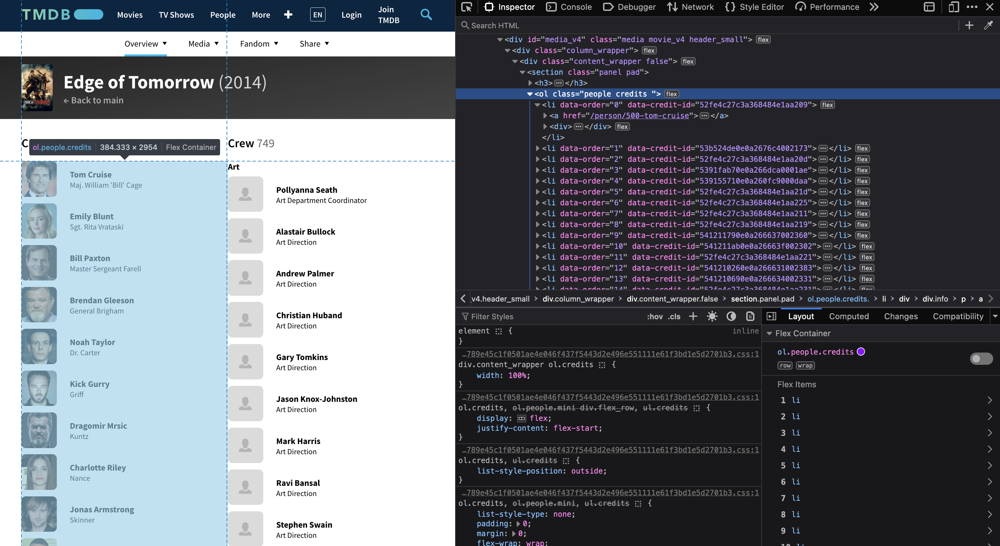

import pandas as pd
movies = pd.read_csv("movies.csv")Introduction
It’s natural to be interested in works created by certain artists, and movies are no exception–if there’s an actor or actress that you’re a fan of, there’s a good chance that you’ll like the other films that they’ve appeared in. There are websites, like https://www.themoviedb.org, that conveniently arrange all of that information, but it can be tedious for a human being to have to go through it page by page.
The internet, though, is made up of computers, and as such, has a structure to it that we can manipulate using computers. In particular, webpages are often designed with HTML–the ML of which means “markup language.” This means that websites are usually sorted into organized pieces of information that contain different markers, called tags, that signal what they’re used for. HTML tags are of the form <tag> ... </tag>, where the information within the dots could be text, link, other tags, or much more things.
By using a technique called web scraping, we can sift through web pages to search for specific tags and grab whatever information we want. To do this, we’re going to use a framework called scrapy that’s written in Python, but we won’t really be using a jupyter notebook as we have been previous. Rather, we’ll be editing files directly that use Python syntax but have a lot of machinery under the hood. The purpose of this post is not to meticulously detail every aspect of scrapy–I would have no idea how to do that–but rather to introduce some of its web scraping capabilities so that you can carry out something like this yourself.
We are going to be scraping the aforementioned website https://www.themoviedb.org, but before we get to that, let’s go over how to set up scrapy.
Getting Started
Setting up a scrapy project is something that you’ll have to do through the command line. I am using Anaconda on a Mac and am using an environment provided for me by my PIC 16B professor that automatically comes with scrapy. For details on any other preliminary steps that may be necessary for your system, please see the following links:
Installation: https://docs.scrapy.org/en/latest/intro/install.html
Setup: https://docs.scrapy.org/en/latest/intro/tutorial.html
Creating the Project
Every scrapy project starts as some sort of folder on your system, but we have the choice of what directory we’d like to place that folder in. Because I’m putting my project together with my Quarto blog, I navigated to the folder to this post to create my project. To do so, use the following syntax:
cd "folder name"
...
cd "final folder name"That is, each time you call cd and specify a folder name, you will change your current directory to that folder. If you want to place your project into a folder within a folder, you must call cd multiple times, each time specifying the name of a folder you’d like to navigate to.
Then, to generate a (blank) scrapy project, enter the following commands:
conda activate "environment name"
scrapy startproject "project name"Replace environment name with whatever Anaconda environment has scrapy installed. This is necessary for us to run the command after, which will create the project, giving it whatever name you specify where I have written project name. In my case, the commands looked like this:
conda activate PIC16B-24W
scrapy startproject TMDB_scraperThis will create a folder with the name TMDB_scraper which contains everything we need for the web scraper. It is absolutely essential that you then change your working directory to the project folder, otherwise, your scraper won’t work!
cd TMDB_scraperCreating the Scraper
Now, within Finder (or Explorer for Windows), open the newly created TMDB_scraper folder. You should see the following: 1. A file called scrapy.cfg 2. Another folder also with the name TMDB_scraper
We’ll return to scrapy.cfg in a bit–it contains some more general configurations for how scrapy works on our system. For now, though, open TMDB_scraper.
Inside of this folder, you should see something like the following:
We will be returning to settings.py later. The other .py files are not going to be explored for the purposes of this exercise, but more advanced web-scraping projects will require you to edit them.
For now, open the folder called spiders. This is where we will manipulate our spider–which we can think of a little “device” that we set up to crawl through our website. It’s what does the scraping for us, and it’s where we’ll have to do most of the coding.
You will be greeted by a file called __init__.py. Open it using the program of your choice. I always use Xcode.
This should file should be blank besides a comment that is generated by default. Please paste the following into the file (generated by Professor Ko). Below, I’ll explain what the code means, and how we’re going to use it:
# to run
# scrapy crawl tmdb_spider -o movies.csv -a subdir=137113-edge-of-tomorrow
import scrapy
class TmdbSpider(scrapy.Spider):
name = 'tmdb_spider'
def __init__(self, subdir=None, *args, **kwargs):
self.start_urls = [f"https://www.themoviedb.org/movie/{subdir}/"]
def parse(self, response):
yield None
def parse_full_credits(self, response):
yield None
def parse_actor_page(self, response):
yield Noneparse, parse_full_credits, and parse_actor_page yield None as a placeholder. We’ll add to the bodies of these functions later.
Since our environment already has scrapy, we should be able to import it without any issue.
First of all, note that we have to declare a class in order for our spider to exist. The name of the class can be whatever you want, but here, I name it TmdbSpider. The class only takes one input, namely, scrapy.Spider. In the body of the class, we define a class variable called name, which will determine the name of the spider which we will use when calling it in the command line, so make sure to give it a name that makes sense! Here, I use tmdb_spider.
Then, for the initialization, besides the mandatory parameter self (recall from PIC16A), we include the argument subdir which by default, we set to None and also allow for additional arguments. We will pass arguments into the spider via the command line. Within the initialization, we have to declare an instance variable called start_urls which is a list of one string, in our case. The element of this list determines what site our spider will start on. I say start on, because by crawling through a website, it can effectively “click” on other links on the page. Here, we declare an f string that takes us to the page of a given movie on themoviedb website. After /movie/, each film has its own unique extension which is precisely what the argument subdir determines. My favorite movie is the action film Edge of Tomorrow starring Tom Cruise, so we’ll be using that for the purposes of this blog. You can pick whatever movie you’d like, but make sure to use the appropriate subdir.
A method specifically named parse is required in order for our spider to work. Before we get to that, though, it’s important to understand on a conceptual level what we want our spider to do:
Specifications
Before giving an outline of what we want our spider to do, we should clarify what we want the final output to be. It would be convenient for us to return a .csv file containing each actor’s name and the name of the movie they’ve been in for each entry. The part where we generate the .csv will actually be done in the command line for us–all we need to do with our spider is to generate a dictionary that corresponds to the entries, where the keys are the name of the columns. Hence, we’ll want one for the actor’s name, and one for the name of the movie.
Okay, let’s inspect the HTML source code of our pages. Note that we’ll start with the “cast” page since all we need to do to get here from the movie page is just by adding cast to the URL. Thus, we won’t actually need to have the spider interact with the movie page itself.

Okay, what’s going on here? Remember, tags in HTML are always enclosed in something like <tag>...</tag>, and a webpage will usually nest lots of tags inside of each other.
We see that there is an <ol> tag–which stands for ordered list–of class people credits. <ol> is a tag built into HTML, whereas people credits is just one class of ol among others that exist on the website. If you see on the left-hand side, we can access this with ol.people.credits. Now, just letting you know ahead of time, we can essentially make our spider retrieve content that exists under certain headings, which is why we want to keep track of what sort of tags and classes are relevant for us.
Then, within the <ol>, we see that we have a bunch of <li> tags, which stands for list item. Let’s look in more detail at the first one (which is opened up in the above image).
Everything between the underlined <li> and </li> is contained within the list element. We see that there are several tags within. One type is called <div>, which stands for division. This divides <li> into different sections. There is another tag called <a>, which contains a link. See how there’s two different ones? The one at the top, which has a <div> tag within it, is a link embedded into the photo of Tom Cruise. The other one is a link embedded into the text that shows his name (highlighted on the left-hand side of the screen).
We can see what page the link takes us to by looking at the href attribute of the <a> tag. You can imagine this to be like a sort of “class variable” for <a>. href actually shows what page the link will take us to. In our case, we see that, in both cases, we get taken to the same page: /person/500-tom-cruise/. Note that this is a subdirectory that we’d have to append onto our URL.
Though both links take us to the same page, we’ll be using the second instance for two reasons. One, it contains less information within it (no images), and two, we can also grab the name of the actor. See how after the href link we simply see the text Tom Cruise? We can grab the actor name from there.
Now, let’s see what we need from the actor page:
So, what do we see here? There’s a <section> of class full_wrapper_credits. This will contain the different movies that the actor has been cast in. Within full_wrapper_credits is a <div> of class credits_list. On each actor’s page, though, it doesn’t just show what movie’s they’ve acted in, but also, what movie’s they’ve produced or have been a non-acting crew member in. We see this in that within div.credits.list are different <tables> of class card credits. The one at the very top is unlabeled and contains the movies they’ve acted in, but if we see below, there are others with an <h3> (header 3) text entry right before, “Production” and “Crew”.
That means that we have to be careful! We don’t want to select a movie if our favorite actor didn’t actually play in it. Let’s look inside of the table now:
Similarly to the <ol>, the table is filled with instances of <tr>–table rows. Each <tr> contains, among other things, another table of class credit_group, if we open this even further, we get:
<td> (table data) tags, which contains an <a> (remember, a link) to the movie in question, and within the link is the text that has the movie name which is inside of a <bdi>, which stands for bidirectional isolate. I’m not really sure what that means, but it stores text, and this is the text that we’re interested in order to get the movie name.
“Pseudocode”
So, let’s recap what we need our spider to do:
- Go to the cast page of our movie.
- Iterate through the
<li>’s of an<ol>. - For each
<li>:- Store the actor’s name from the
<a>in each<li>. - Follow the link to the actor’s page
- Isolate the correct
<table>of classcard credits - Iterate through the
<tr>’s of the<table> - For each
<table>- Open up the
<a>in thecredit grouptable. - Grab the text stored in
<bdi> - Return a dictionary containing the actor’s name and the movie name
- Open up the
- Store the actor’s name from the
That’s a lot of steps, but we’ll take them one at a time. Another rule of thumb (whose justification I’ll explain) is that, every time we follow a new link, we need to create a new method for our spider. So, we start on the movie page, go to the cast page, and then go to the actor’s page. Hence, we’ll need 3 different methods which correspond to the (currently blank) ones that you should have in your tmdb_spider.py file.
Additional Tweaks
There are a few essential things that we should go over before sstarting to play around with our spider, even though we could technically get started right now.
scrapy shell
As it stands, the only way we’re able to test our spider is by imputting commands into our terminal. This makes debugging quite difficult. In order to help with this, it’s recommended that you use the scrapy shell:
https://docs.scrapy.org/en/latest/topics/shell.html
This should be easy to set up if you are working in an envrionment with IPython installed. All you need to do is go to the scrapy.cfg file (which is in the highest level directory within your project folder) and enter the following:
[settings]
shell = ipythonWhen you start of the command prompt, this will actually let you simultaneously run scrapy commands while also using it as a Python console, meaning that you can write code.
User Agent
Websites don’t necessarily like bots on their pages collecting their data all of the time, especially because it can cause a lot of traffic to be directed to a site at once. To mitigate this, many websites have measures that attempt to remove spiders. For example, there is a document called robots.txt that contains information about what webscrapers can and can’t access. By default, there is a line in the settings.py file that displays the following:
ROBOTSTXT_OBEY = TrueIt’s important to obey robots.txt, so we’ll be keeping this as-is. However, when I first tried to run my scraper, it didn’t work because I kept getting 403 (access forbidden) errors because the site wasn’t happy about my spider. In order to get around this, we need to mimic a human being on the website. To do so, open settings.py and paste the following:
USER_AGENT = 'Mozilla/5.0 (Windows NT 10.0; Win64; x64) AppleWebKit/537.36 (KHTML, like Gecko) Chrome/97.0.4692.71 Safari/537.36'I’m not an expert on this, but essentially, the information in USER_AGENT is sent to the website when accessing it, and if we use the USER_AGENT argument to mimic a web browser (I found the above information online), then a website is much more likely to let us through. In my case (and with this website), this solves the issue. Stay in settings.py for the next section!
Page Limit
While debugging, we don’t want to run extremely long requests since they take time. It’s generally good practice to limit the number of pages that your spider can scrape while you’re still testing it out. In settings.py, paste the following line:
CLOSESPIDER_PAGECOUNT = 20This instructs the spider to terminate its scraping after having visited 20 pages, which is a decent number to start out with, even if (according to the implementation of our spider) we should be visiting more.
Once you’re ready to test your final version, make sure to remove this line!
Spider Methods
Recall that we need to use three different methods for each different page. Returning to our pseudocode steps from earlier, the division of work is going to look something like this:
- Go to the cast page of our movie. (Method 1:
parse) - Iterate through the
<li>’s of an<ol>. (Method 2:parse_full_credits) - For each
<li>:- Store the actor’s name from the
<a>in each<li>. - Follow the link to the actor’s page
- Isolate the correct
<table>of classcard credits(Method 3:parse_actor_page) - Iterate through the
<tr>’s of the<table> - For each
<table>- Open up the
<a>in thecredit grouptable. - Grab the text stored in
<bdi> - Return a dictionary containing the actor’s name and the movie name
- Open up the
- Store the actor’s name from the
Let’s go through the steps one-by-one for each method.
Method 1: parse
Step 1: Go to the cast page of our movie.
The header of our function parse looks like the following:
parse(self, response)The response parameter means “whatever it is that our spider is looking at”, i.e., the current page. Thus, the completed version of parse should then be:
def parse(self, response):
"""
Initial parse method for class ```TMdbSpider``
Assumes valid ``subdir`` argument from initialization.
Sends spider to crawl ``cast_url`` (movie's cast page).
Yields `scrapy.Request` using `parse_full_credits
"""
cast_url = self.start_urls[0] + "cast"
yield scrapy.Request(cast_url, callback = self.parse_full_credits)The string cast_url simply refers to the step of adding the cast to the end of our movie page’s URL in order to access the cast page. The next line is more complicated. Recall from PIC16A that, for generators, yield acts as a sort of partial return statement that lets the function continue running. When it comes to a scrapy spider, we use yield when we want to jump to another page. We do this by calling the function scrapy.Request, which, for our purposes, has two crucial arguments. One is the url (which we set to cast_url), and the other is called callback. Since yield effectively lets us ‘exit’ the function, we need to specify what method we’re using to crawl through the linked url, which will be the next method, parse_full_credits
Upon completing this yield, our spider will then go to the cast page for the actor and access its HTML source code, just like we did when inspecting the page. This is why we need 3 different methods: each page has a different source code, so when we Request something from a new page, we’re looking at something new!
Method 2: parse_full_credits
Step 2: Iterate through the <li>’s of an <ol>.
Okay, so now that our spider is on the page cast_url, we need to tell it what to do on that page, and because of our callback argument, we’re going to need to write code for the parse_full_credits method.
So, remember that the first thing that we wanted our spider to do was to inspect the <ol> of class people credits. If you go to the page in question, we will see that these are properly kept as ol.people.credits. There’s one other caveat. We have to make sure that we’re only grabbing actors and not any other crew members. Luckily, the credits for crew members are stored in a class called ol.people.credits.crew, but if we were to just specify ol.people.credits in our code, scrapy will only check whether or not that tag/class is contained in the class that it’s inspecting, not if they’re identical. So, to navigate to just hte normal ol.people.credits, we need our spider to go to ol.people.credits:not(.crew). Furthermore, we don’t want our spider to grab every single piece of information within the ol, but rather, each of the lis. To specify that we’re looking for a tag witihn a tag, we put a space after our query and type the name of the tag we’re interested in. Hence, we want our spider to go to ol.people.credits:not(.crew) li, for each li. Finally, remember how there were 2 different links inside of each li, but we only wanted one of them? The one that wasn’t stored with the actor’s photo was in a <div> of class info. So, our final “query” is going to be ol.people.credits:not(.crew) li div.info
Alright, how do we actually do this? This involves using the response parameter from earlier. Recall that response is the HTML source code. By using the .css method, we can essentially sort through the page’s CSS code to convert what’s on the page into something that tmdb_spider.py can process. Hence, for now, write the following:
def parse_full_credits(self, response):
actor_list = response.css("ol.people.credits:not(.crew) li div.info")One very nice thing about the way .css works is that our spider will automatically grab every instance of li that matches the above criteria. We don’t have to worry about any sort of iteration at this point. In fact, the return value, which we store as actor_list is an iterator that we can use with a for loop! Note that anything inside of .css must be a string.
Step 3: For each <li>
Store the actor’s name from the <a> in each <li>.
Recall that the both the actor’s name and the link to their page is stored within each <li>. Thus, we can make our for loop as such:
def parse_full_credits(self, response):
actor_list = response.css("ol.people.credits:not(.crew) li div.info")
for actor_li in actor_list:
actor_name = actor_li.css("a::text").get()Since actor_list is an iterator, we can call its individual elements actor_li, which is still a piece of HTML source code that we’ve placed locally into our program. So, once again, we inspect the <li>’s CSS code by using .css. In particular, recall that links are stored in a tag called <a>, but <a>’s contain multiple parts that aren’t necessarily subtags. In these cases, we use the double colon operator :: to grab specific parts of the tag. The name of the actor, if you go back to the screenshot above, was not kept in any sort of specific attribute. Rather, it was just placed in the body of <a>. We can access it by calling a::text. To convert that text into a Python string, however, we need to use the .get() method, which we then assign to actor_name.
One tricky bit here, by the way, is that while response.css grabs every instance of the specified tag, .get() will only place the first instance of what’s found into a Python object. This doesn’t matter in this specific instance, but it’s important to know. You would have to use .getall() otherwise.
Follow the link to the actor’s page
The completed for loop below is longer than you might be expecting:
def parse_full_credits(self, response):
"""
Second parse method for class ``TMdbSpider``
Called from `parse`. Assumes valid ``cast_url``
Fetches links to all actors' pages from cast page:
An ordered list `ol` of class `people credits` contains
`li` list elements with `div` elements of class `info`.
Each `li` stores the link to the actor's page and the
actor's name in an `a` tag.
Stores name of each actor in ``actor_name``.
Yields `scrapy.Request` using `self.parse_actor_page`. Passes ``actor_name``
"""
actor_list = response.css("ol.people.credits:not(.crew) li div.info")
for actor_li in actor_list:
actor_link = actor_li.css("a::attr(href)").get()
actor_name = actor_li.css("a::text").get()
if actor_link:
actor_link = response.urljoin(actor_link)
yield scrapy.Request(actor_link, callback=self.parse_actor_page, meta = {"actor": actor_name})In addition to grabbing the actor’s name, as we just did, we also grab the link and store it as a string in actor_link, once again using .get(). This time, href is stored as an attribute of <a> (note that it’s in pink when we inspect the page), so we use a::attr(href). If you remember from earlier, though, what’s stored inside of href is not the full URL, it’s just a subdirectory on https://www.themoviedb.org. We then have a conditional statement if actor_link. Recall that actor_link is a string. We want to make sure to stop here if we’ve gotten to the last actor on the page, so if there’s no one left, actor_link will simply be set to None. If we do have a link present, however, we can easily convert it to the full URL, however, by using the .urljoin method of response. This takes the root of the response webpage and simply adds whatever subdirectory is specified.
Since we’re going to be navigating to another page, we’re going to have to call scrapy.Request again. The next URL is actor_link, our last method will be parse_actor_page, but we also pass in a dictionary called meta with key actor and value actor_name. Parse methods in scrapy have the ability to allow for optional arguments (**kwargs) which we need if we want to pass the actor’s name from this method to the next one. To find out about this, I read this page. Search for “meta”:
https://docs.scrapy.org/en/latest/topics/request-response.html
Note that we can’t just declare a new instance variable called actor_name or something like that. This ends up breaking the code.
Method 3: parse_actor_page
Now we’re onto the last page, and the last method!
Step 4: Isolate the correct <table> of class card credits
Just like we did with the <ol> in the previous method, we’re going to use response.css to grab the card credits table that has the acting appearances and store it as an iterator that we will extract individual movies from. But remember what we said earlier? We only want to grab the first table of this type, so we’re going to be using a single colon with :first-of-type (thank you Professor Ko for helping me with this!). and grab all of the tooltip classes of <a>, which are precisely the actor names (see images from the previous part:
def parse_actor_page(self, response):
movie_list = response.css("div.credits_list table.card.credits:first-of-type a.tooltip")…Except this doesn’t completely work. The problem (which I discovered when testing my submission for this assignment) is that there are some actors for whom the table that shows the movies in which they’ve acted is not the first. This seems to happen when someone is primarily known as a crew member but has also made appearances in movies–the works in which they’ve been a crew member appear at the top.
There is, however, a fix. Look at the image below:
Each of the tables is preceded by a tag <h3> (which is a sort of header) that acts as a label. In our case, we want the table that follows the <h3> tag with text “Acting.” How do we do this? I wasn’t very sure because up until now, all we’ve had to do is filter within certain tags–I had to figure out how to access items based on surrounding tags.
I’m not sure if this is possible using the .css method, but I did find that through xpath, this is possible via this StackOverflow post:
https://stackoverflow.com/questions/65271036/python-scrapy-selector-for-text-elements-between-tags
xpath is a language designed to parse through xml documents, which is similar to HTML. I’m not exactly how XML differs from HTML, nor do I know about how compatible they are. What I do know is that we can use it with Scrapy, and there is documentation about this on scrapy’s selector page:
https://docs.scrapy.org/en/latest/topics/selectors.html#scrapy.selector.Selector
I was able to get a grasp on how to use it from both the StackOverflow post, the site below, and the blog post below:
https://www.w3schools.com/xml/xpath_syntax.asp https://www.guru99.com/using-contains-sbiling-ancestor-to-find-element-in-selenium.html
The command we need to input is the following:
acting_table = response.xpath("//h3[contains(text(), 'Acting')]/following-sibling::table[@class='card credits'][1]")
movie_list = acting_table.css("a.tooltip")response.xpath is used when we want to use XPath instead of HTML. The double slash // is similar to typing the name of a tag with .css. What follows is the name of the tag that we’re interested in, so in our case, we use h3. The brackets are used to place some sort of function inside. We use one called contains which is a sort of filtering function which, for our purposes, takes two arguments. The first lets us know what kind of item we’re looking for, in our case, text(), and the second is the thing itself we want, namely, Acting. So, once we wrap this up, we get all <h3>s such that they contain the word Acting.
But, remember, that’s not what we want. We want the table of class card credits that follows the table. This is where we really need xpath, because we get to use something called following-sibling. First, though, we have to put a single slash /. This is what’s used to select from a prior node (whereas the double slash is used to select everything corresponding to a specific tag). following-sibling can be used to select items that are siblings “on the same level,” in a certain sense. Notice how the <table>‘s are interlaced by the <h3>’s–one isn’t a subtag of the other, so they’re siblings! According to the syntax, we have to specify what kind of tag we want with the double colon operator, so ::table, and then we specify the class within brackets with @class = 'card credits'. We put a [1] at the end (xpath indexing sadly starts from 1) to specify that we only want the first of such tables (since otherwise we’d be grabbing all of them that following ’Acting’.
Then I return back to CSS just to be more comfortable. We grab all of the tooltips in <a> to get the movie names.
Grab the text stored in <bdi>
Now, like we did earlier, we need to create a for loop. Recall that the name of the movie that the actor has starred in is stored in a <bdi>, so we once again need to use the double colon operator with text in order to select the name. Finally, we use the .get() method to store it as a string.
def parse_actor_page(self, response):
acting_table = response.xpath("//h3[contains(text(), 'Acting')]/following-sibling::table[@class='card credits'][1]")
movie_list = acting_table.css("a.tooltip")
for movie in movie_list:
movie_or_TV_name = movie.css("bdi::text").get()Return a dictionary containing the actor’s name and the movie name
This is the last step! We’ll actually do this in the body of a yield statement, which will signal to scrapy that this is the end (no more requests after this). Of course, by virtue of the fact that we’ve been using yields (and not returns) this whole time allows us to continue iterating in our for loop (we do, after all, technically have a nested for loop split across two methods).
See the code below:
def parse_actor_page(self, response):
"""
Final parse method for class ``TMdbSpider``
Called from `parse_full_credits`. Assumes valid ``actor_link`` and ``actor_name``
Fetches the name of each movie that an actor has been in from their page. Each
movie's name is in the text component of a `bdi` element on the page. The `bdi`
element is in a link (`a`) element of class `tooltip`.
Yields the actor's name and each movie/TV show's name as a dictionary with keys
"actor" and "movie_or_TV_name"
Actor name takenfrom ``actor`` key in dict ``meta``, extracted from
`parse_full credits`.
"""
acting_table = response.xpath("//h3[contains(text(), 'Acting')]/following-sibling::table[@class='card credits'][1]") #Grabs the first table following 'Acting'
movie_list = acting_table.css("a.tooltip")
#Get only the films/shows they've appeared in, and grab their link tooltips
for movie in movie_list:
movie_or_TV_name = movie.css("bdi::text").get() #Get the name in <bdi> from each movie
yield {
"actor" : response.meta.get("actor"), #Actor name passed into function
"movie_or_TV_name" : movie_or_TV_name #From above result
} movie_or_TV_name was stored for us in the last step, but recall that we passed the actor name into parse_actor_page using kwargs**. Per the documentation, we have to use the method .meta.get() on the dictionary key in order to get its corresponding value (recall that we had meta = {"actor" : actor_name}).
And then we’re done! Well, with making the spider, anyway.
Getting Results
Now the time has come to actually run our spider. Make sure to remove the CLOSESPIDER_PAGECOUNT = 20 line from settings.py and that your current directory is set to the project folder. The following command should generate a .csv file called movies:
scrapy crawl tmdb_spider -o movies.csv -a subdir=137113-edge-of-tomorrowThe crawl command lets scrapy know that we’re going to be using our spider to crawl. We then follow it with the name of the spider (the name variable in the class initialization). -o lets the command line know the format of our output, in this case, a csv file called movies. Note that if we replace this with a capital -O, we’ll rewrite the file (otherwise we would add onto it). If you want to be testing with the same file, it’s probably a good idea to write over the file.
-a signals that whatever comes afterwards is an argument of our spider. In thiscase, the subdir for Edge of Tomorrow’s movie page.
Let’s import this file into our notebook to see what we’ve gotten!
movies.head()| actor | movie_or_TV_name | |
|---|---|---|
| 0 | Dany Cushmaro | Edge of Tomorrow |
| 1 | Erin Burnett | Edge of Tomorrow |
| 2 | Erin Burnett | The Incredible Burt Wonderstone |
| 3 | Erin Burnett | Erin Burnett OutFront |
| 4 | Erin Burnett | Too Big to Fail |
movies.info()<class 'pandas.core.frame.DataFrame'>
RangeIndex: 1207 entries, 0 to 1206
Data columns (total 2 columns):
# Column Non-Null Count Dtype
--- ------ -------------- -----
0 actor 1207 non-null object
1 movie_or_TV_name 1207 non-null object
dtypes: object(2)
memory usage: 19.0+ KB1207 movies (or shows)! That’s quite a lot. Let’s see who appears in the most movies:
movies_manip = movies.copy()
appearances = movies_manip.groupby("actor").apply("count")
appearances = appearances.reset_index().sort_values(by = "movie_or_TV_name",
ascending = False).rename(columns = {"movie_or_TV_name" :"count"})
appearances['Sole Appearance'] = appearances['count'] == 1
appearances.head()| actor | count | Sole Appearance | |
|---|---|---|---|
| 34 | Tom Cruise | 128 | False |
| 10 | David Kaye | 116 | False |
| 6 | Bill Paxton | 107 | False |
| 7 | Brendan Gleeson | 104 | False |
| 12 | Emily Blunt | 103 | False |
Tom Cruise sure is an accomplished actor, and there are some others who are pretty close to him! Let’s take a look and see in more detail:
import plotly.io as pio
pio.renderers.default="iframe"from plotly import express as px
movie_bar = px.bar(appearances, x="actor", y = "count", color = "Sole Appearance", color_discrete_sequence=['blue', 'red'])
movie_bar.update_layout(
title=dict(text="Appearances per Actor", font=dict(size=20), automargin=True, yref='paper'),
xaxis_title="",
yaxis_title="Number of Appearances",
)There are actually 4 actors that have only ever appeared in Edge of Tomorrow! According to the TMDB database, John Dutton played someone named ‘Old Man 2’, Darry Cushmaro was ‘Channel 2 News Anchor’, Aaron Romano was ‘Dog Soldier 2’ (but a human), but Jackson was ’Refugee Dog! :)
It would also be interesting to see what other movies have featured the highest number of the same actors:
coincidences = movies.copy()
coincidences['Movies Together'] = coincidences.groupby("movie_or_TV_name").transform("count")
coincidences = coincidences[(coincidences['Movies Together'] > 1) & (coincidences['movie_or_TV_name'] != 'Edge of Tomorrow')]
coincidences = coincidences.sort_values(by = "Movies Together", ascending = False)coincidences| actor | movie_or_TV_name | Movies Together | |
|---|---|---|---|
| 619 | Tony Way | Doctor Who | 4 |
| 483 | Ronan Summers | Doctor Who | 4 |
| 362 | Tommy Campbell | Doctor Who | 4 |
| 455 | Bentley Kalu | Doctor Who | 4 |
| 537 | Beth Goddard | Casualty | 3 |
| ... | ... | ... | ... |
| 459 | Ronan Summers | Hitmen | 2 |
| 454 | Bentley Kalu | Gulliver's Travels | 2 |
| 453 | Bentley Kalu | Twenty Twelve | 2 |
| 442 | Bentley Kalu | American Assassin | 2 |
| 1206 | Emily Blunt | The Oscars | 2 |
131 rows × 3 columns
Besides Edge of Tomorrow, the most common works that people have in common are TV shows, which isn’t surprising, since they have lots of episodes. 4 of our actors have been in Doctor Who together. Let’s see what else we’ve got:
coincidences_bar = px.bar(coincidences, x="movie_or_TV_name", hover_name = 'actor')
coincidences_bar.update_layout(
title=dict(text="Other Shared Works (Hover to See Names)", font=dict(size=20), automargin=True, yref='paper'),
xaxis_title="",
yaxis_title="Number of Shared Actors",
)
coincidences_bar.show()It’s also not surprising to see talk shows like Saturday Night Live, The View, and the Graham Norton Show being futured. Doctor Who, Green Zone, and Sherlock are the only other fictional works that have at least 3 actors in common, and Green Zone is the only movie. Maybe I’ll like that one too!
Thanks for reading my post :3